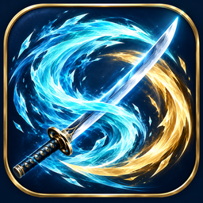

ONE LANE / TWO RIVALS
疾风对决
风雪之上，胜负一线。
同一片冰桥，面对面的对手。
两台电脑连接同一 Wi-Fi 或有线局域网。一人创建对局，另一人输入主机地址与房间码。
01 / HOST
创建局域网对局
由这台电脑主持对局。把主机地址和游戏内的六位房间码告诉好友。
好友连接以下地址
02 / JOIN
加入好友对局
选择创建或加入，无需账号与互联网。

ONE LANE / TWO RIVALS
风雪之上，胜负一线。
两台电脑连接同一 Wi-Fi 或有线局域网。一人创建对局，另一人输入主机地址与房间码。
01 / HOST
由这台电脑主持对局。把主机地址和游戏内的六位房间码告诉好友。
02 / JOIN
选择创建或加入，无需账号与互联网。